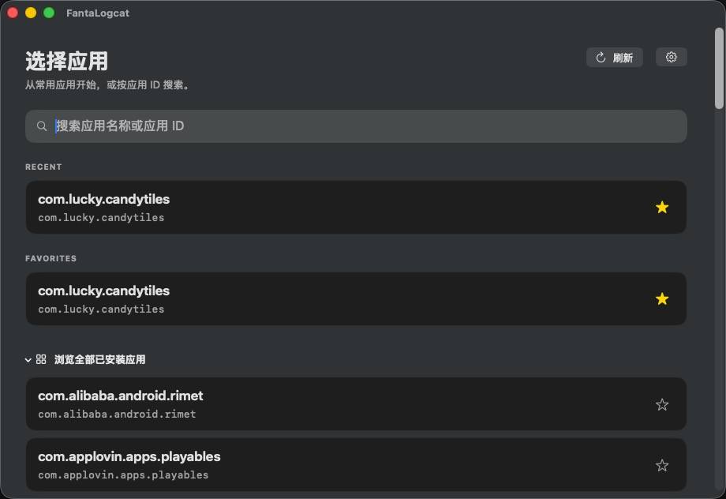

快速找到目标应用
从最近使用、收藏或设备上的全部应用中选择，也可以直接搜索应用名称和应用 ID。

FantaLogcat 是为 macOS 打造的 Android 日志工作台。连接设备、选中应用，实时查看完整日志；组合搜索、优先级筛选与安全导出都在一个原生应用里完成。

从应用选择到组合搜索，每一步都围绕真实的 Android 调试流程设计。
从最近使用、收藏或设备上的全部应用中选择，也可以直接搜索应用名称和应用 ID。

用关键词卡片和 OR / AND 关系构建查询，复杂筛选也能一眼看懂。
流式接收输出并在本地增量匹配；既减少等待，也不会因设备端缓冲造成漏匹配。
导出时默认识别常见 token、密码和密钥模式，降低误分享风险。
通过 USB 调试连接 Android 设备；首次使用时按引导安装官方 Platform-Tools。
从最近、收藏或已安装应用中选择目标包，也可直接搜索应用 ID。
叠加优先级和关键词条件，在不断进入的新日志里持续定位关键信息。
FantaLogcat 会按需下载并校验 Google 官方 Platform-Tools。你不需要提前安装或配置 ADB 环境。
FantaLogcat 基于 Apache License 2.0 开源。欢迎查看实现、提交问题，或参与下一次改进。